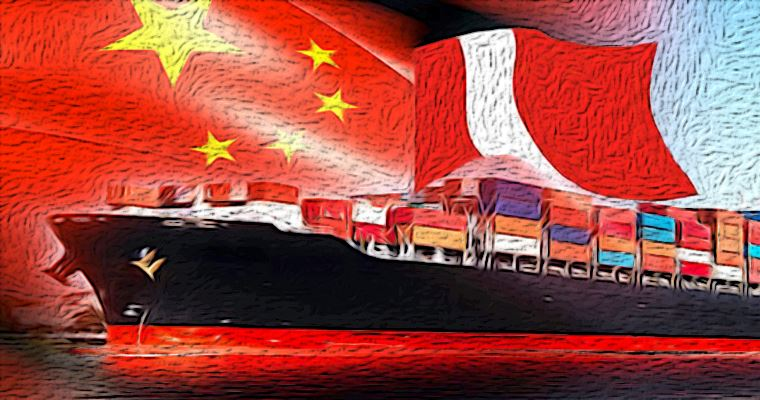

beneficios de la economia china
- China ha realizado significativas inversiones en infraestructura en Perú, como carreteras, puentes y puertos, lo cual mejora la conectividad del país y apoya su desarrollo económico regional.
- Las inversiones chinas han estimulado el crecimiento económico al crear empleos y fomentar el desarrollo de sectores clave, especialmente en minería y energía, que son fundamentales para la economía peruana.
- La apertura de nuevos mercados en China para los productos peruanos ayuda a diversificar las exportaciones y reduce la dependencia de mercados tradicionales, lo que puede estabilizar la economía peruana.
- La colaboración con empresas chinas facilita la transferencia de tecnología y conocimientos, promoviendo la innovación y el desarrollo en diversas industrias locales.
- La creciente relación entre Perú y China ha aumentado el turismo chino en el país, lo cual puede impulsar la economía local a través del gasto en servicios, alojamiento y atracciones, además de promover el intercambio cultural.
- China ofrece becas y programas de capacitación para estudiantes y profesionales peruanos, lo que contribuye al desarrollo de capital humano y fortalece las habilidades y conocimientos en diversas áreas clave para el crecimiento del país.
